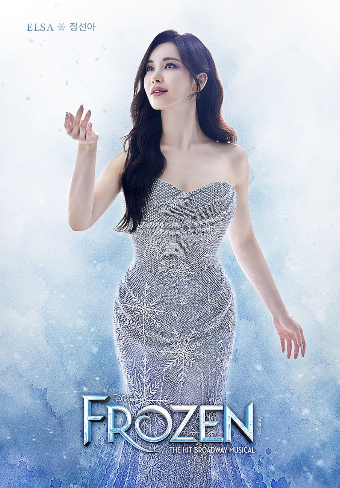
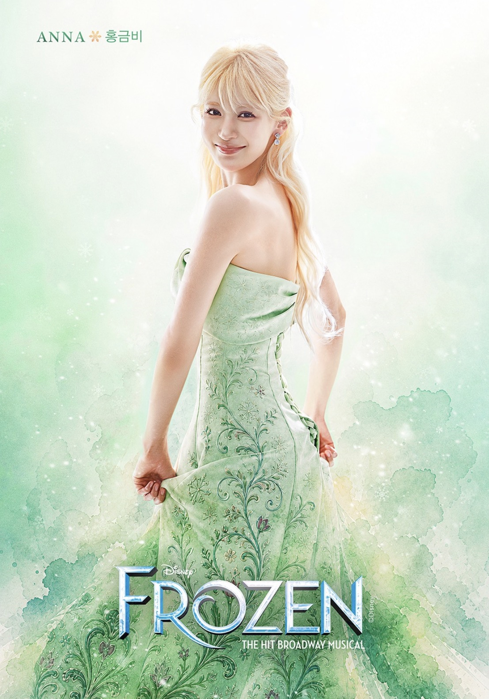
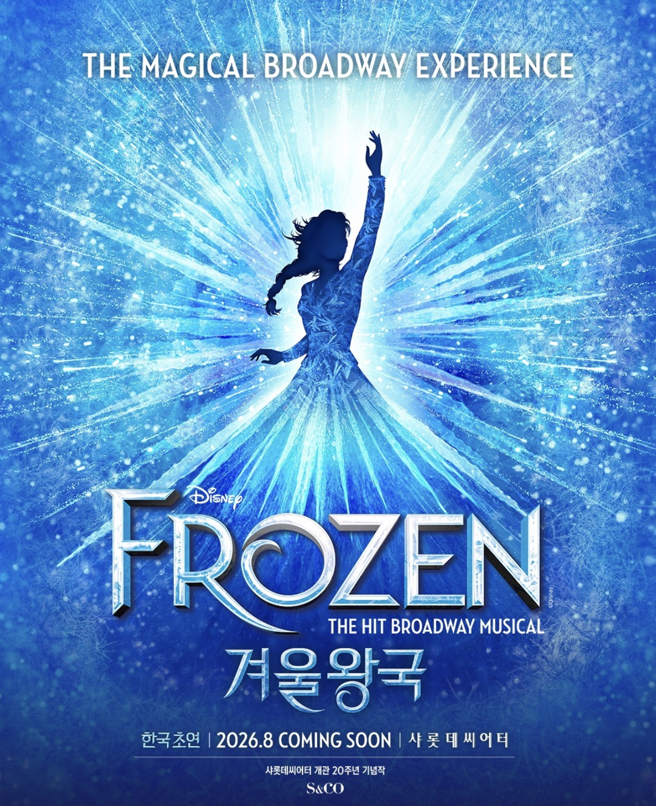
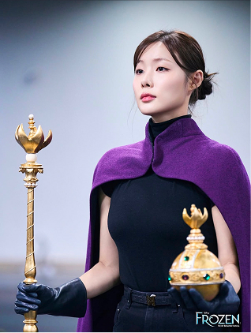
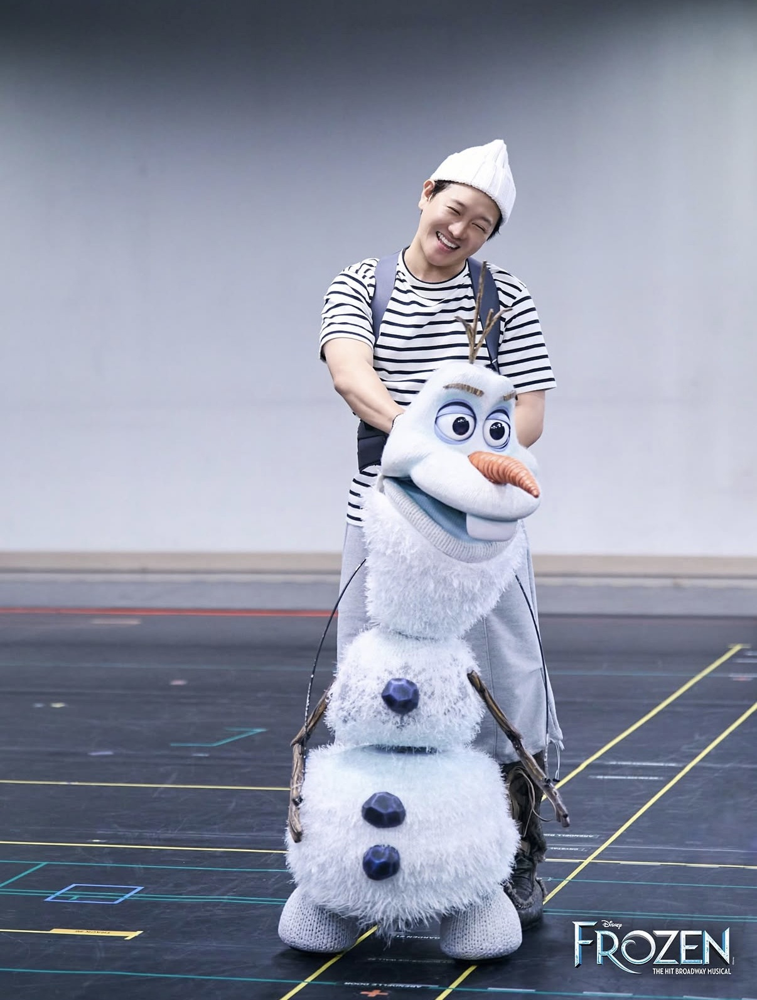
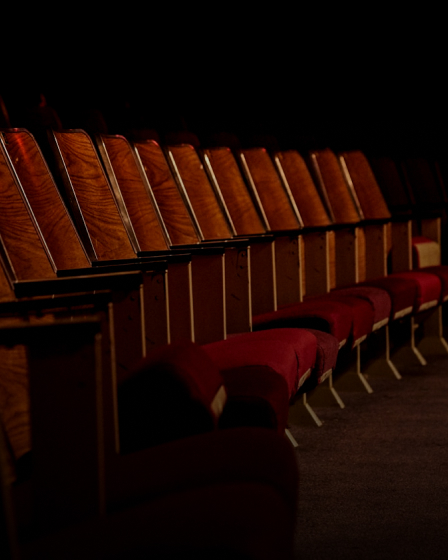
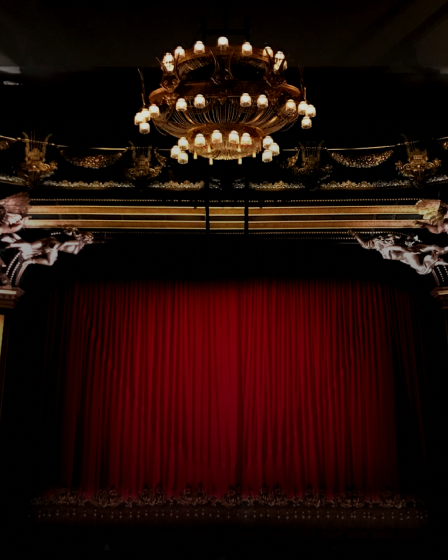

본문콘텐츠영역
샤롯데씨어터
ABOUT CHARLOTTE 뮤지컬 전용 극장이 선사하는
완벽한 몰입
국내 최초 뮤지컬 전용관으로서, 최적화된 무대와 음향 설계로
객석 어디서나 동일한 몰입을 경험할 수 있습니다.
NOW SHOWING
지금, 무대 위에서 펼쳐지는 단 하나의 이야기



공연중

- 뮤지컬 <겨울왕국>
- 겨울왕국 2026.08.13 - 2027.03.01
- 얼음과 마법이 빚어낸 겨울, 무대 위에서 다시 펼쳐지는 디즈니 최고의 이야기
관람 편의 안내
VISIT GUIDE
샤롯데씨어터 이용 정보를 한눈에 확인하세요.
-
01
SEATING PLAN
좌석배치도
등급별 좌석과 무대와의 거리를 미리 확인하세요.

arrow_right_alt -
02
VISITER GUIDE
관람안내
입장 시간부터 관람 매너까지 한 번에 안내해드려요.
arrow_right_alt -
03
FACILITIES & SERVICE
부가서비스 이용안내
물품보관, 오페라글라스 등 편의시설 안내해드려요.

arrow_right_alt
스페셜콜라보
SPECIAL & PACKAGE
커튼콜 그 이후, 또 하나의 무대가 열립니다.
아카이브
REVIEW & PRESS
이 무대를 만난 사람들은 이렇게 말했어요, 평단의 시선부터 객석의 작은 속삭임까지
★★★★★
“올 해 꼭 봐야할 무대, 잊지 못할 커튼콜”
_언론사 A